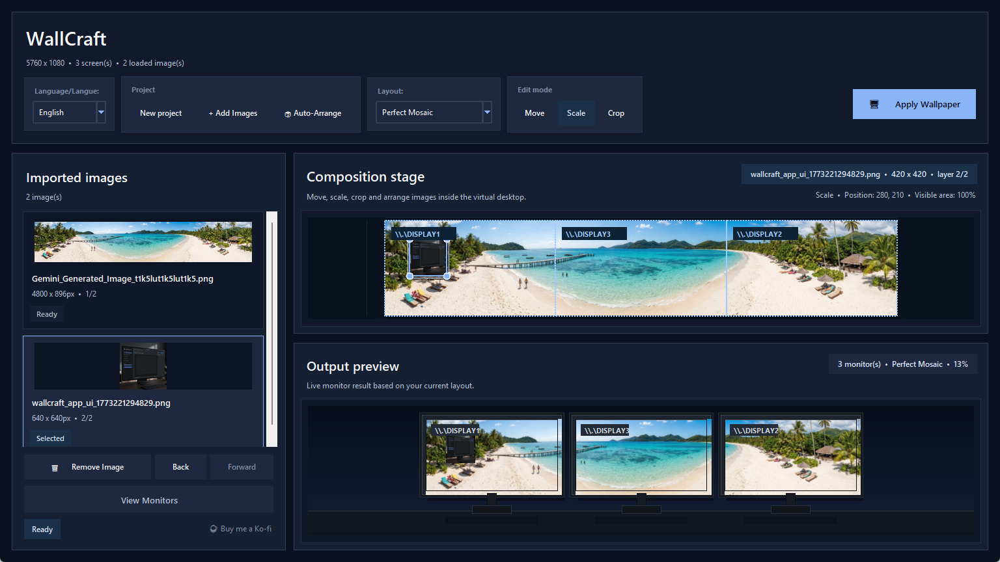

Bilder importieren
Ein oder mehrere Fotos in die Projektbibliothek laden.
Die Oberfläche basiert auf einem einfacheren Zyklus: importieren, platzieren, skalieren, ordnen, prüfen und anwenden.
Der aktuelle Workflow ist leichter zu verstehen und zu steuern.
Ein oder mehrere Fotos in die Projektbibliothek laden.
Bilder im virtuellen Desktop platzieren und ein Layout wählen.
Den Skalierungsmodus nutzen, um die Größe mit festem Seitenverhältnis zu ändern.
Bilder nach hinten oder vorne setzen, wenn Inhalte überlagern.
Multi-Monitor-Vorschau prüfen und dann exportieren oder anwenden.
Das neue Layout hält wichtige Aktionen oben und die Fläche in der Mitte.

Neues Projekt, Bearbeitungsmodi und kompakte Bibliothek verbessern den Einstieg.
Die Fläche ist größer und klarer zu bearbeiten.
Bilder direkt auf der virtuellen Monitor-Karte skalieren, zuschneiden und bewegen.
Lade den aktuellen Build herunter, teste dein Multi-Monitor-Layout und nutze das GitHub-Repository für Updates und Quellcode.